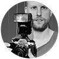

Hello! I am a nature photographer from Kolbu, constantly traveling around Norway showcasing the nature and landscape of this beautiful country. I love to take pictures, especially landscape and macro shots. I use both digital and analog equipment, with the use of vintage lenses on my DSLR.
I’ve had my photography published in various magazines and online publications such as NPhoto Magazine, Digital Photographer, Landscape Photography Magazine, CameraPixio and Resource Travel.
Education
2008 - 2011 Bergen Academy of Art and Design
Selected Awards & Exhibitions
- 2019 Norwegian Nature Photo Festival
- 2019 Sony World Photography Awards
- 2017 Best Photography Composition, "Waterfall in the forest"
- 2016 Råkvåg Art Exhibition
- 2014 NPPA Best of Photojournalism, 1st prize
- 2014 Pictures of the Year, Monochrome Photography Awards
- 2013 Pictures of the Year, Scandinavian Summer Edit
- 2011 Norwegian State Artist’s Exhibition